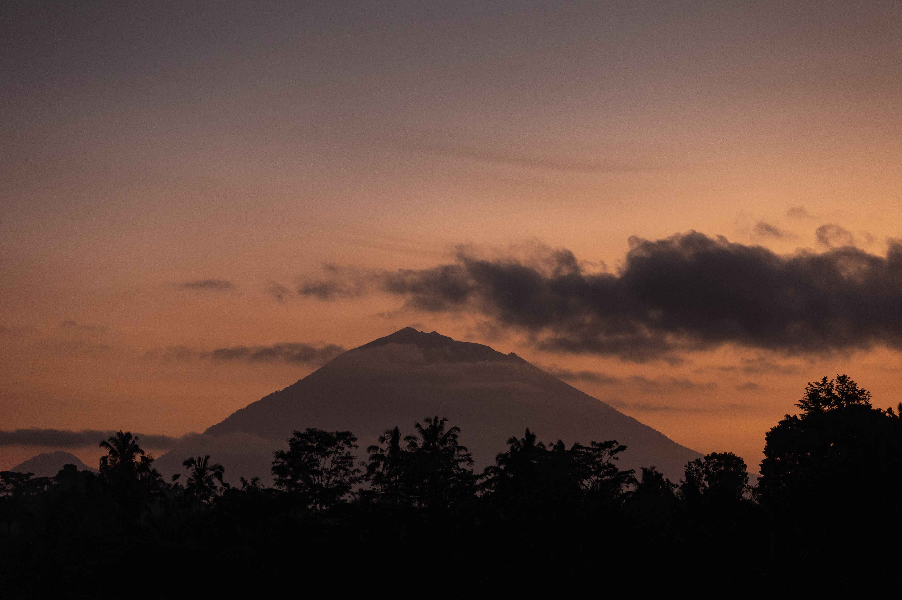

Selva y bienestar
Ubud y el valle del Ayung
Ubud es el centro espiritual de Bali, y sus mejores villas no están en el pueblo, sino suspendidas sobre el valle del río Ayung, rodeadas de selva y con el río como único sonido. Es el lugar para bajar revoluciones: masajes balineses sin reloj, yoga al amanecer frente a los arrozales y una cocina basada en producto local. Aquí el bienestar también es cultura: un melukat, el ritual de purificación en los manantiales sagrados de Tirta Empul, guiado por un sacerdote solo para ti antes de que llegue nadie; los templos tallados en la roca de Gunung Kawi, o una tarde en el jardín de una mujer que cultiva hierbas medicinales y te enseña a preparar tu propia infusión.
- Melukat con sacerdote privado en Tirta Empul, antes de las multitudes
- Té de hierbas medicinales en el jardín de una curandera local
- Taller de jamu, la medicina herbal tradicional
CuándoTodo el año; de abril a octubre, estación seca.